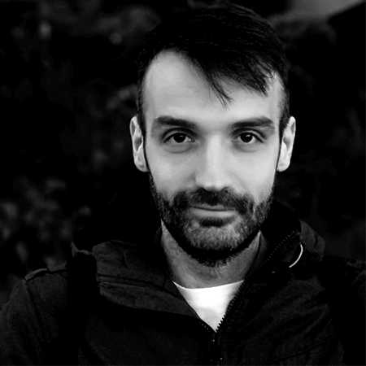
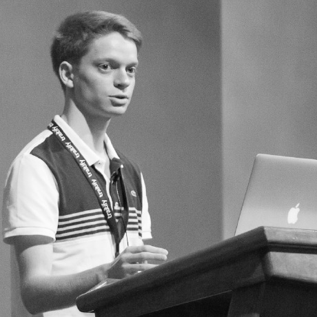

DISCOVER THE FUTURE OF THE ERLANG ECOSYSTEM
OUR NEXT CONFERENCESOur speakers

Natalia Chechina
One of the core authors of SD Erlang, lecturer in computing (Bournemouth University)
Keynote:
Ingela Anderton Andin
Top female contributor to Erlang/OTP; SW developer in the OTP team
Gabriel Kolawole
Platform Developer @ Coingaming

José Valim
Creator of the Elixir programming language, Chief Adoption Officer at Dashbit

Manuel Rubio
Polyglot Developer, Writer, Manager and Trainer


Marc Sugiyama
Experienced Erlang engineer, consultant, and trainer

Peer Stritzinger
GRiSP Inventor, Distributed Computing in IoT and everywhere
Roshan Giri
Experienced parallel and concurrency enthusiast developing secure medical messaging system @ Medical Objects Pty Ltd
Anton Lavrik
Lead of WhatsApp Erlang team
From 10s to 1000s engineers: scaling Erlang developer experience at WhatsApp

Chaitanya Chalasani
Using Erlang and Incubating Erlang Teams in India since 2003

Timmo Verlaan
Erlang & Elixir contributor, Nerves/GRiSP enthusiast!
Ryan Resella
Trying to make the world better through the use of technology.

Alvise Susmel
Software engineer, in love with Elixir, founder of poeticoding.com
Jeff Weiss
Knows more about SCADA protocols than he cares to, Senior Software Engineer @ Enbala Power Networks
A Beginner's Guide to TLA+: Exploring State Machines & Proving Correctness

Edmond Begumisa
Experienced enterprise Erlanger building scalable medical messaging systems @ Medical-Objects Pty Ltd.
Pawel Szafran
FP pragmatist who chose Elixir over Scala and Clojure
Marcelo Lebre
CTO and co-founder of Remote, crazy for building scalable projects and teams

Nikola Begedin
Full-stack engineer @ V7 Labs

Bryan Naegele
Author and maintainer of the Prometheus Telemetry. Metrics Reporter.
Raimo Niskanen
Author of gen_statem, co-author of the new socket interface
Mikkel Høgh
18 years of experience building web applications in of all shapes and sizes
Rebuilding a complex web-app with Elixir and Phoenix LiveView


Dmytro Lytovchenko
Senior developer at Erlang Solutions, refactoring terrible software to be pretty and readable
Maxim Kharchenko
A programming language enthusiast, Erlang in particular.
Bjarne Däcker
Former manager of the Computer Science Laboratory at Ericsson

Eric Meadows-Jönsson
Elixir team member, creator of Hex and Ecto
Sebastian Strollo
Erlang Developer and Cofounder at Avassa